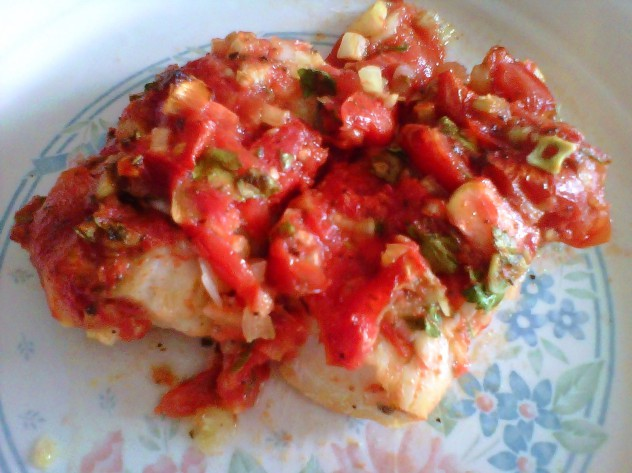

Baccala alla Pizzaiola
Ingredients
- 2 lb baccala ( salt cod )
- 6 Tbsps olive oil
- 2 large garlic cloves,very finely chopped
- 3 cups peeled, seeded. and chopped fresh tomatoes or 28 to 35 oz can Italian peeled tomatoes, drained and chopped
- 1 tsp dried oregano
- Salt and pepper to taste
- 6 fresh basil leaves, torn into bits
Directions
- Place the baccala in a large bowl with cool water to cover and place the bowl in the refrigerator to soak for 24 hours
- changing the water every few hours, until the water no longer tastes salty.
- Bring about 2 inch of water to simmer in a deep skillet.
- Add the fish and cook for 10 minutes or until it is tender but not breaking apart.
- Remove the fish with a slotted spoon.
- Let cool, then remove any skin and bones.
- Meanwhile, put 1/4 cup of in the oil in a medium saucepan with the garlic and cook over medium heat until the garlic is lightly golden.
- Add the tomatoes and their juice, the oregano, and salt and pepper to taste.
- Bring to simmer and cook for 20 minutes or until the sauce is slightly thickened.
- Stir in the basil.
- Preheat the oven to 400 F.
- Choose a baking dish large enough to hold the fish in a single layer.
- Spoon a thin layer of sauce into the dish.
- Arrange the fish on top.
- Spoon on the remaining sausage and drizzle with the remaining 2 tablespoons oil.
- Bake for 30 minutes, or until the sauce is bubbling. Serve hot.